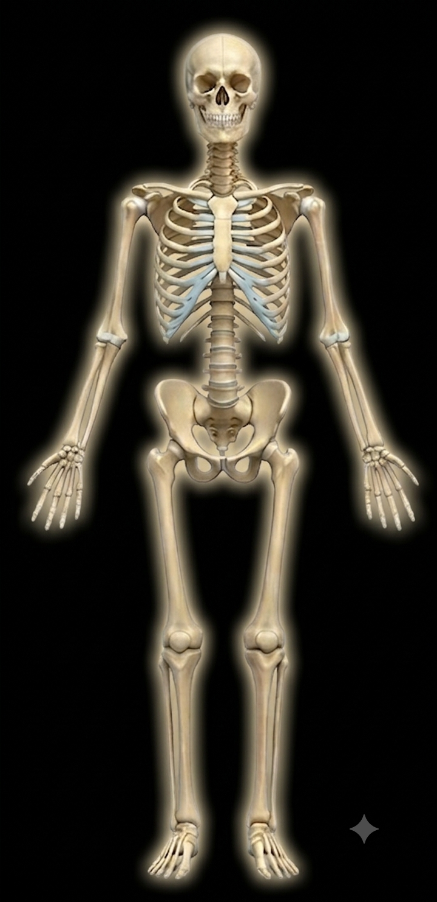

Anatomia Humana DG
Explorador de Sistemas
1. Selecciona un Sistema:
-- Elige un sistema --
Sistema Óseo (Esqueleto)
Sistema Muscular
Sistema Nervioso
Órganos Internos
2. Conoce sus partes:

Herramienta de Disección
¿Qué capa deseas borrar (descubrir)?
Músculos (Capa Exterior)
Órganos Internos
Sistema Nervioso
🔄 Restaurar Capas